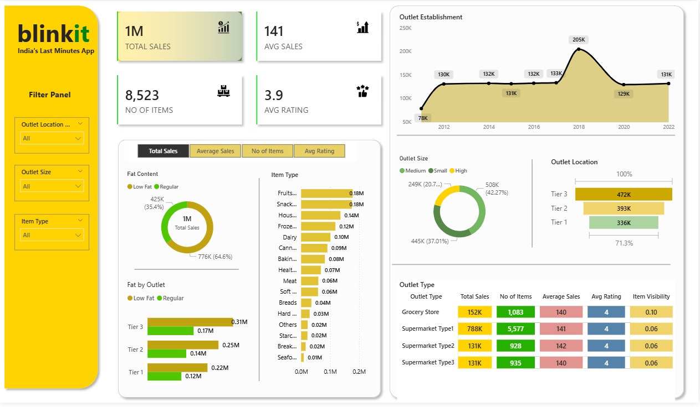

Power BIBlinkit Sales & Revenue Analytics
Problem Statement
Blinkit lacked a unified, real-time view of regional revenue performance, profit margins, and granular product-level trends, hindering agile merchandising and strategic expansion decisions.
Approach
Engineered a centralized data model linking disparate sales streams. Developed dynamic DAX measures (Total Sales, Profit %, AOV) and integrated interactive drill-down filters for city, category, and timeframes.
Business Impact
Empowered regional managers to rapidly identify top-performing SKUs and isolate underperforming market segments, facilitating data-driven inventory and marketing optimizations.